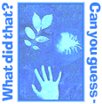
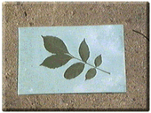
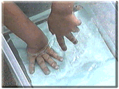
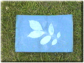
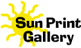
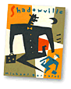

| |
Opaque |
Fun in the sun:
We collected objects of different shapes and sizes and used them to make sun prints. Most of our objects blocked out the light, because they were opaque, and made terrific prints. - Kristin
You'll need:
- Sunprint® paper
- objects (as many as you can find)
- flat container of water
- a sunny day
|
 Place object on paper until paper turns white |
 Soak in water for a few minutes |
 Lay flat and allow to dry |

Send us your prints.
We'll add them to our
Sun Print gallery.

|
What would the prints look like if you used a flashlight instead of sunlight? Try making a print using a mystery object and have someone guess what it is. How is this similar to taking a picture? |
|
 |
|
|
||
|
||
|
|
||
 Gathered by topic |
 Connected together |
 Index of ideas |
 Search |


 Decorate with color and light
Decorate with color and light